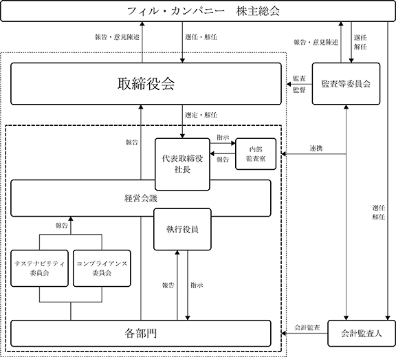

(注) 提出日現在発行数には、2024年２月１日からこの有価証券報告書提出日までの新株予約権の行使により発行された株式数は、含まれておりません。
第９回新株予約権
※ 当事業年度の末日（2023年11月30日）における内容を記載しております。当事業年度の末日から提出日の前月末現在（2024年１月31日）にかけて変更された事項については、提出日の前月末現在における内容を〔 〕内に記載しており、その他の事項については当事業年度の末日における内容から変更はありません。
(注) １．新株予約権１個につき目的となる株式数は、200株であります。
ただし、新株予約権の割当日後、当社が株式分割、株式併合を行う場合は、次の算式により付与株式数を調整されるものとし、調整の結果生じる１株未満の端数は、これを切り捨てる。
２．新株予約権の割当日後、当社が株式分割、株式併合を行う場合は、次の算式により払込金額を調整されるものとし、調整により生ずる１円未満の端数は切り上げる。
また、新株予約権の割当日後に時価を下回る価額で新株式の発行又は自己株式の処分を行う場合は、次の算式により払込金額を調整されるものとし、調整により生ずる１円未満の端数は切り上げる。
３．新株予約権の行使の条件は以下のとおりであります。
① 新株予約権者は、当社の経常利益が下記(ⅰ)及び(ⅱ)に掲げる水準を満たしている場合に限り、各新株予約権者に割り当てられた本新株予約権のうち、当該各号に掲げる割合(以下、「行使可能割合」という。)の個数を限度として、本新株予約権を行使することができる。
(ⅰ)2018年11月期乃至2020年11月期のいずれかの期における経常利益が５億円を超過した場合：50％
(ⅱ)2019年11月期乃至2021年11月期のいずれかの期における経常利益が10億円を超過した場合：100％
なお、上記における経常利益の判定においては、金融商品取引法に基づき提出する有価証券報告書に記載される連結損益計算書（連結損益計算書を作成していない場合、損益計算書）における経常利益を参照するものとし、国際財務報告基準の適用等により参照すべき項目の概念に重要な変更があった場合には、別途参照すべき指標を取締役会で定めるものとする。また、行使可能割合の計算において、各新株予約権者の行使可能な本新株予約権の数に１個未満の端数が生じる場合は、これを切り捨てた数とする。なお、上記の経常利益の判定において、新たな会計基準の適用等により本新株予約権に関連する株式報酬費用が計上されることとなった場合には、これによる影響を排除した株式報酬費用控除前の修正経常利益をもって判定するものとする。
② 新株予約権者は、上記①における業績目標を達成した年度末後において退職した場合には、当該達成年度における行使可能割合の個数を限度として本新株予約権を行使することができる。ただし、任期満了による退任、その他正当な理由があると取締役会が認めた場合は、この限りではない。
③ 新株予約権の相続人による本新株予約権の行使は認めない。
④ 本新株予約権の行使によって、当社の発行済株式総数が当該時点における発行可能株式総数を超過することとなるときは、当該本新株予約権の行使を行うことはできない。
⑤ 各本新株予約権１個未満の行使を行うことはできない。
４. 新株予約権の取得に関する事項
① 当社が消滅会社となる合併契約、当社が分割会社となる会社分割についての分割契約もしくは分割計画、または当社が完全子会社となる株式交換契約もしくは株式移転計画について株主総会の承認（株主総会の承認を要しない場合には取締役会決議）がなされた場合は、当社は、当社取締役会が別途定める日の到来をもって、本新株予約権の全部を無償で取得することができる。
② 新株予約権者が権利行使をする前に、上記３に定める規定により本新株予約権の行使ができなくなった場合は、当社は新株予約権を無償で取得することができる。
５．組織再編行為の際の新株予約権の取扱い
当社が、合併（当社が合併により消滅する場合に限る。）、吸収分割、新設分割、株式交換または株式移転（以上を総称して以下、「組織再編行為」という。）を行う場合において、組織再編行為の効力発生日に新株予約権者に対し、それぞれの場合につき、会社法第236条第１項第８号イからホまでに掲げる株式会社（以下、「再編対象会社」という。）の新株予約権を以下の条件に基づきそれぞれ交付することとする。ただし、以下の条件に沿って再編対象会社の新株予約権を交付する旨を、吸収合併契約、新設合併契約、吸収分割契約、新設分割計画、株式交換契約または株式移転計画において定めた場合に限るものとする。
① 交付する再編対象会社の新株予約権の数
新株予約権者が保有する新株予約権の数と同一の数をそれぞれ交付する。
② 新株予約権の目的である再編対象会社の株式の種類
再編対象会社の普通株式とする。
③ 新株予約権の目的である再編対象会社の株式の数
組織再編行為の条件を勘案のうえ、組織再編前の条件に準じて決定する。
④ 新株予約権の行使に際して出資される財産の価額
交付される各新株予約権の行使に際して出資される財産の価額は、組織再編行為の条件等を勘案のうえ、上記２で定められる行使価額を調整して得られる再編後行使価額に、上記③に従って決定される当該新株予約権の目的である再編対象会社の株式の数を乗じた額とする。
⑤ 新株予約権を行使することができる期間
組織再編行為前の条件に定める行使期間の初日と組織再編行為の効力発生日のうち、いずれか遅い日から組織再編行為前の条件に定める行使期間の末日までとする。
⑥ 新株予約権の行使により株式を発行する場合における増加する資本金及び資本準備金に関する事項
組織再編行為前の条件に準じて決定する。
⑦ 譲渡による新株予約権の取得の制限
譲渡による取得の制限については、再編対象会社の取締役会の決議による承認を要するものとする。
⑧ その他新株予約権の行使の条件
組織再編行為前の条件に準じて決定する。
⑨ 新株予約権の取得事由及び条件
組織再編行為前の条件に準じて決定する。
⑩ その他の条件については、再編対象会社の条件に準じて決定する。
６．2017年３月22日開催の当社取締役会決議に基づき、2017年４月15日付をもって普通株式１株を２株に分割したことにより、「新株予約権の目的となる株式の種類、内容及び数」、「新株予約権の行使時の払込金額」、「新株予約権の行使により株式を発行する場合の株式の発行価格及び資本組入額」が調整されております。
第10回新株予約権
※ 当事業年度の末日（2023年11月30日）における内容を記載しております。当事業年度の末日から提出日の前月末現在（2024年１月31日）にかけて変更された事項については、提出日の前月末現在における内容を〔 〕内に記載しており、その他の事項については当事業年度の末日における内容から変更はありません。
(注) １．新株予約権１個につき目的となる株式数は、100株であります。
ただし、新株予約権の割当日後、当社が株式分割、株式併合を行う場合は、次の算式により付与株式数を調整されるものとし、調整の結果生じる１株未満の端数は、これを切り捨てる。
２．新株予約権の割当日後、当社が株式分割、株式併合を行う場合は、次の算式により払込金額を調整されるものとし、調整により生ずる１円未満の端数は切り上げる。
また、新株予約権の割当日後に時価を下回る価額で新株式の発行又は自己株式の処分を行う場合は、次の算式により払込金額を調整されるものとし、調整により生ずる１円未満の端数は切り上げる。
３．新株予約権の行使の条件は以下のとおりであります。
① 新株予約権者は、当社の経常利益が下記(ⅰ)及び(ⅱ)に掲げる水準を満たしている場合に限り、各新株予約権者に割り当てられた本新株予約権のうち、当該各号に掲げる割合(以下、「行使可能割合」という。)の個数を限度として、本新株予約権を行使することができる。
(ⅰ)2018年11月期における経常利益が５億円を超過した上で、2019年11月期又は2020年11月期のいずれかの期における経常利益が５億円を超過した場合：50％
(ⅱ)2019年11月期乃至2021年11月期のいずれかの期における経常利益が10億円を超過した場合：100％
なお、上記における経常利益の判定においては、金融商品取引法に基づき提出する有価証券報告書に記載される連結損益計算書（連結損益計算書を作成していない場合、損益計算書）における経常利益を参照するものとし、国際財務報告基準の適用等により参照すべき項目の概念に重要な変更があった場合には、別途参照すべき指標を取締役会で定めるものとする。また、行使可能割合の計算において、各新株予約権者の行使可能な本新株予約権の数に１個未満の端数が生じる場合は、これを切り捨てた数とする。なお、上記の経常利益の判定において、新たな会計基準の適用等により本新株予約権に関連する株式報酬費用が計上されることとなった場合には、これによる影響を排除した株式報酬費用控除前の修正経常利益をもって判定するものとする。
② 新株予約権者は、上記①における業績目標を達成した年度末後において退職した場合には、当該達成年度における行使可能割合の個数を限度として本新株予約権を行使することができる。ただし、任期満了による退任、その他正当な理由があると取締役会が認めた場合は、この限りではない。
③ 新株予約権の相続人による本新株予約権の行使は認めない。
④ 本新株予約権の行使によって、当社の発行済株式総数が当該時点における発行可能株式総数を超過することとなるときは、当該本新株予約権の行使を行うことはできない。
⑤ 各本新株予約権１個未満の行使を行うことはできない。
４. 新株予約権の取得に関する事項
① 当社が消滅会社となる合併契約、当社が分割会社となる会社分割についての分割契約もしくは分割計画、または当社が完全子会社となる株式交換契約もしくは株式移転計画について株主総会の承認（株主総会の承認を要しない場合には取締役会決議）がなされた場合は、当社は、当社取締役会が別途定める日の到来をもって、本新株予約権の全部を無償で取得することができる。
② 新株予約権者が権利行使をする前に、上記３に定める規定により本新株予約権の行使ができなくなった場合は、当社は新株予約権を無償で取得することができる。
５．組織再編行為の際の新株予約権の取扱い
当社が、合併（当社が合併により消滅する場合に限る。）、吸収分割、新設分割、株式交換または株式移転（以上を総称して以下、「組織再編行為」という。）を行う場合において、組織再編行為の効力発生日に新株予約権者に対し、それぞれの場合につき、会社法第236条第１項第８号イからホまでに掲げる株式会社（以下、「再編対象会社」という。）の新株予約権を以下の条件に基づきそれぞれ交付することとする。ただし、以下の条件に沿って再編対象会社の新株予約権を交付する旨を、吸収合併契約、新設合併契約、吸収分割契約、新設分割計画、株式交換契約または株式移転計画において定めた場合に限るものとする。
① 交付する再編対象会社の新株予約権の数
新株予約権者が保有する新株予約権の数と同一の数をそれぞれ交付する。
② 新株予約権の目的である再編対象会社の株式の種類
再編対象会社の普通株式とする。
③ 新株予約権の目的である再編対象会社の株式の数
組織再編行為の条件を勘案のうえ、組織再編前の条件に準じて決定する。
④ 新株予約権の行使に際して出資される財産の価額
交付される各新株予約権の行使に際して出資される財産の価額は、組織再編行為の条件等を勘案のうえ、上記２で定められる行使価額を調整して得られる再編後行使価額に、上記③に従って決定される当該新株予約権の目的である再編対象会社の株式の数を乗じた額とする。
⑤ 新株予約権を行使することができる期間
組織再編行為前の条件に定める行使期間の初日と組織再編行為の効力発生日のうち、いずれか遅い日から組織再編行為前の条件に定める行使期間の末日までとする。
⑥ 新株予約権の行使により株式を発行する場合における増加する資本金及び資本準備金に関する事項
組織再編行為前の条件に準じて決定する。
⑦ 譲渡による新株予約権の取得の制限
譲渡による取得の制限については、再編対象会社の取締役会の決議による承認を要するものとする。
⑧ その他新株予約権の行使の条件
組織再編行為前の条件に準じて決定する。
⑨ 新株予約権の取得事由及び条件
組織再編行為前の条件に準じて決定する。
⑩ その他の条件については、再編対象会社の条件に準じて決定する。
該当事項はありません。
③ 【その他の新株予約権等の状況】
2022年８月24日開催の当社取締役会において決議され発行した新株予約権は次のとおりであります。
第１回新株予約権
※ 当事業年度の末日（2023年11月30日）における内容を記載しております。当事業年度の末日から提出日の前月末現在（2024年１月31日）にかけて変更された事項については、提出日の前月末現在における内容を[ ]内に記載しており、その他の事項について当事業年度の末日における内容から変更はありません。
(注) １ 当該行使価額修正条項付新株予約権付社債券等の特質
１．本新株予約権の目的となる株式の総数は200,000株、割当株式数（別記「新株予約権の目的となる株式の種類、内容及び数」欄第１項に定義する。）は100株で確定しており、株価の上昇により行使価額（別記「新株予約権の行使時の払込金額」欄第２項に定義する。）が修正されても変化しない（但し、別記「新株予約権の目的となる株式の種類、内容及び数」欄に記載のとおり調整されることがある）。なお、株価の上昇により行使価額が修正された場合、本新株予約権による資金調達の額は増加する。
２．行使価額の修正基準：本新株予約権の発行後、株式会社東京証券取引所（以下「東京証券取引所」という。）における当社普通株式の普通取引の終値（以下「終値」という。）が2,200円（別記「新株予約権の行使時の払込金額」欄第４項の規定を準用して調整される。）を上回る日が20取引日連続した場合、行使価額は、当該20取引日目の日の翌日（但し、2023年３月13日以降の日に限る。以下、「修正日」という。）以降、3,500円（別記「新株予約権の行使時の払込金額」欄第４項の規定を準用して調整される。）に修正される。
「取引日」とは、東京証券取引所が開設している日をいい、当社普通株式の普通取引の終値が発表されない日を含まない。但し、本項においては気配引けの日は取引日に含まれるものとし、当該日の最終気配値段を終値とみなして本項の規定を適用する。
３．行使価額の修正頻度：行使価額が修正されるのは、本欄第２項に記載の１回のみである。
４．行使価額の下限：行使価額の下限は、当初行使価額である2,000円である。但し、別記「新株予約権の行使時の払込金額」欄第４項の規定を準用して調整される。
５．割当株式数の上限：200,000株（2022年５月31日現在の発行済株式総数に対する割合は3.46％）
６．本新株予約権がすべて行使された場合の資金調達の下限：401,750,000円（本欄第４項に記載の行使価額の下限にて本新株予約権がすべて行使された場合の資金調達額。但し、新株予約権の一部は行使されない可能性がある。）
７．新株予約権には、当社の決定により本新株予約権の全部又は一部の取得を可能とする条項が設けられており、また、当社が2025年９月11日に本新株予約権の全部を取得する条項が設けられている（詳細は、別記「（注）７.自己新株予約権の取得の事由及び取得の条件」欄を参照）。
(注) ２ 新株予約権の目的となる株式の種類、内容及び数
１．本新株予約権の目的である株式の種類及び総数は、当社普通株式200,000株とする（本新株予約権１個当たりの目的たる株式の数（以下「割当株式数」という。）は100株とする。）但し、下記第２項乃至第４項により割当株式数が調整される場合には、本新株予約権の目的である株式の総数は調整後割当株式数に応じて調整されるものとする。
２．当社が別記「新株予約権の行使時の払込金額」欄第４項の規定に従って行使価額の調整を行う場合には、割当株式数は次の算式により調整される。但し、調整の結果生じる１株未満の端数は切り捨てる。なお、かかる数式における調整前行使価額及び調整後行使価額は、別記「新株予約権の行使時の払込金額」欄第４項に定める調整前行使価額及び調整後行使価額とする。
３．調整後割当株式数の適用日は、当該調整事由に係る別記「新株予約権の行使時の払込金額」欄第４項第(2)号、第(5)号及び第(6)号による行使価額の調整に関し、各号に定める調整後行使価額を適用する日と同日とする。
４．割当株式数の調整を行うときは、当社は、調整後割当株式数の適用開始日の前日までに、本新株予約権に係る新株予約権者（以下「本新株予約権者」という。）に対し、かかる調整を行う旨並びにその事由、調整前割当株式数、調整後割当株式数及びその適用開始日その他必要な事項を書面で通知する。但し、別記「新株予約権の行使時の払込金額」欄第４項第(2)号⑤に定める場合その他適用開始日の前日までに上記通知を行うことができない場合には、適用開始日以降速やかにこれを行う。
(注) ３ 新株予約権の行使時の払込金額
１．本新株予約権の行使に際して出資される財産の価額
各本新株予約権の行使に際して出資される財産は金銭とし、その価額は、行使価額に割当株式数を乗じた額とする。
２．本新株予約権の行使に際して出資される当社普通株式１株当たりの金銭の額（以下「行使価額」という。）は、当初2,000円とする。但し、行使価額は、下記第３項又は第４項に従い修正又は調整される。
３．行使価額の修正
本新株予約権の発行後、終値が2,200円（本欄第４項の規定を準用して調整される。）を上回る日が20取引日連続した場合、行使価額は修正日以降、3,500円（本欄第４項の規定を準用して調整される。）に修正される。
本項においては気配引けの日は取引日に含まれるものとし、当該日の最終気配値段を終値とみなして本項の規定を適用する。
４．行使価額の調整
(1) 当社は、当社が本新株予約権の発行後、本項第(2)号に掲げる各事由により当社の普通株式数に変更を生じる場合又は変更を生じる可能性がある場合には、次に定める算式（以下「行使価額調整式」という。）をもって行使価額を調整する。
(2) 行使価額調整式により行使価額の調整を行う場合及び調整後行使価額の適用時期については、次に定めるところによる。
① 下記第(4)号②に定める時価を下回る払込金額をもって当社普通株式を新たに発行し、又は当社の保有する当社普通株式を処分する場合（無償割当てによる場合を含む。）（但し、当社又はその関係会社（財務諸表等の用語、様式及び作成方法に関する規則第８条第８項に定める関係会社をいう。以下同じ。）の取締役その他の役員又は従業員を対象とする譲渡制限付株式報酬として株式を交付する場合、新株予約権（新株予約権付社債に付されたものを含む。）の行使、取得請求権付株式又は取得条項付株式の取得、その他当社普通株式の交付を請求できる権利の行使によって当社普通株式を交付する場合、及び会社分割、株式交換、株式交付又は合併により当社普通株式を交付する場合を除く。）
調整後行使価額は、払込期日（募集に際して払込期間を定めた場合はその最終日とし、無償割当ての場合はその効力発生日とする。）以降、又はかかる発行若しくは処分につき株主に割当てを受ける権利を与えるための基準日がある場合はその日の翌日以降これを適用する。
② 株式の分割により普通株式を発行する場合
調整後行使価額は、株式の分割のための基準日の翌日以降これを適用する。
③ 下記(4)号②に定める時価を下回る払込金額をもって当社普通株式を交付する定めのある取得請求権付株式又は下記第(4)号②に定める時価を下回る払込金額をもって当社普通株式の交付を請求できる新株予約権（新株予約権付社債に付されたものを含む。）を発行又は付与する場合（但し、当社又はその関係会社の取締役その他の役員又は従業員に新株予約権を割り当てる場合を除く。）
調整後行使価額は、取得請求権付株式の全部に係る取得請求権又は新株予約権の全部が当初の条件で行使されたものとみなして行使価額調整式を適用して算出するものとし、払込期日（新株予約権の場合は割当日）以降又は（無償割当ての場合は）効力発生日以降これを適用する。但し、株主に割当てを受ける権利を与えるための基準日がある場合には、その日の翌日以降これを適用する。
上記にかかわらず、請求又は行使に際して交付される当社普通株式の対価が、取得請求権付株式又は新株予約権が発行された時点で確定していない場合は、調整後行使価額は、当該対価の確定時点で発行されている取得請求権付株式又は新株予約権のすべてが当該対価の確定時点の条件で請求又は行使され当社普通株式が交付されたものとみなして行使価額調整式を適用して算出するものとし、当該対価が確定した日の翌日以降、これを適用する。
④ 当社の発行した取得条項付株式又は取得条項付新株予約権（新株予約権付社債に付されたものを含む。）の取得と引換えに下記第(4)号②に定める時価を下回る価額をもって当社普通株式を交付する場合（但し、本号③により既に行使価額が調整されたものを除く。）
調整後行使価額は、取得日の翌日以降これを適用する。
⑤ 上記①乃至③の場合において、基準日が設定され、かつ効力の発生が当該基準日以降の株主総会、取締役会その他当社の機関の承認を条件としているときには、上記①乃至③にかかわらず、調整後行使価額は、当該承認があった日の翌日以降これを適用する。
この場合において、当該基準日の翌日から当該承認があった日までに本新株予約権の行使請求をした本新株予約権者に対しては、次の算出方法により、当社普通株式を交付する。
この場合、１株未満の端数を生じたときはこれを切り捨てるものとする。
(3) 行使価額調整式により算出された調整後行使価額と調整前行使価額との差額が１円未満にとどまる場合は、行使価額の調整は行わない。但し、その後行使価額の調整を必要とする事由が発生し、行使価額を調整する場合には、行使価額調整式中の調整前行使価額に代えて調整前行使価額からこの差額を差し引いた額を使用する。
(4)
① 行使価額調整式の計算については、円位未満小数第１位まで算出し、小数第１位を四捨五入する。
② 行使価額調整式で使用する時価は、調整後行使価額が初めて適用される日に先立つ45取引日目に始まる30取引日の終値の平均値（終値のない日数を除く。）とする。この場合、平均値の計算は、円位未満小数第１位まで算出し、小数第１位を四捨五入する。
③ 行使価額調整式で使用する既発行株式数は、株主に割当てを受ける権利を与えるための基準日がある場合はその日、また、かかる基準日がない場合は、調整後行使価額を初めて適用する日の１ヶ月前の日における当社の発行済普通株式の総数から、当該日において当社の保有する当社普通株式を控除した数とする。また、上記第(2)号②の場合には、行使価額調整式で使用する新発行・処分株式数は、基準日において当社が有する当社普通株式に割り当てられる当社の普通株式数を含まないものとする。
(5) 上記第(2)号の行使価額の調整を必要とする場合以外にも、次に掲げる場合には、当社は、本新株予約権者と協議の上、その承認を得て、必要な行使価額の調整を行う。
① 株式の併合、資本の減少、会社分割、株式交換、株式交付又は合併のために行使価額の調整を必要とするとき。
② その他当社の発行済普通株式数の変更又は変更の可能性が生じる事由等の発生により行使価額の調整を必要とするとき。
③ 行使価額を調整すべき複数の事由が相接して発生し、一方の事由に基づく調整後行使価額の算出にあたり使用すべき時価につき、他方の事由による影響を考慮する必要があるとき。
(6) 上記第(2)号の規定にかかわらず、上記第(2)号に基づく調整後行使価額を初めて適用する日が本欄第３項に基づく行使価額の修正日と一致する場合には、当社は、必要な行使価額の調整を行う。
(7) 行使価額の調整を行うときは、当社は、調整後行使価額の適用開始日の前日までに、本新株予約権者に対し、かかる調整を行う旨並びにその事由、調整前行使価額、調整後行使価額及びその適用開始日その他必要な事項を書面で通知する。但し、上記第(2)号⑤に定める場合その他適用開始日の前日までに上記通知を行うことができない場合には、適用開始日以降速やかにこれを行う。
(注）４ 新株予約権の行使により株式を発行する場合の株式１株の発行価格
本新株予約権の行使により交付する当社普通株式１株の発行価格は、行使請求に係る本新株予約権の行使に際して出資される財産の価額の総額に、行使請求に係る本新株予約権の総額を加えた額を、別記「新株予約権の目的となる株式の数」欄記載の本新株予約権の目的である株式の総数で除した額とする。
(注）５ 新株予約権の行使により株式を発行する場合における増加する資本金及び資本準備金の額
本新株予約権の行使により株式を発行する場合の増加する資本金の額は、会社計算規則第17条の定めるところに従って算定された資本金等増加限度額に0.5を乗じた金額とし、計算の結果１円未満の端数を生じる場合はその端数を切り上げた額とする。増加する資本準備金の額は、資本金等増加限度額より増加する資本金の額を減じた額とする。
(注) ６ 新株予約権の行使請求の受付場所、取次場所及び払込取扱場所
１．行使請求の受付場所
東京証券代行株式会社 本店
２．行使請求の取次場所
該当事項はありません。
３．行使請求の払込取扱場所
株式会社みずほ銀行 渋谷中央支店
(注) ７ 自己新株予約権の取得の事由及び取得の条件
１．当社は、本新株予約権の取得が必要と当社取締役会が決議した場合は、本新株予約権の払込期日の翌日以降、会社法第273条及び第274条の規定に従って、取得日の２週間前までに通知した上で、当社取締役会で定める取得日に、本新株予約権１個当たり払込金額と同額で、本新株予約権者（当社を除く。）の保有する本新株予約権の全部又は一部を取得することができる。一部取得をする場合には、抽選その他の合理的な方法により行うものとする。
２．当社は、2025年９月11日に、本新株予約権１個当たり払込金額と同額で、本新株予約権者（当社を除く。）の保有する新株予約権の全部を取得する。
３．当社は、当社が消滅会社となる合併又は当社が完全子会社となる株式交換、株式交付若しくは株式移転（以下「組織再編行為」という。）につき当社株主総会（株主総会の決議を要しない場合は、取締役会）で承認決議した場合、会社法第273条の規定に従って通知又は公告をした上で、当該組織再編行為の効力発生日前に、本新株予約権１個当たり払込金額と同額で、本新株予約権者（当社を除く。）の保有する本新株予約権の全部を取得する。
４．当社は、当社が発行する株式が東京証券取引所により監理銘柄、特設注意市場銘柄若しくは整理銘柄に指定された場所又は上場廃止となった場合には、当該銘柄に指定された日又は上場廃止が決定した日から２週間後の日（休業日である場合には、その翌営業日とする。）に、本新株予約権１個当たり払込金額と同額で、本新株予約権者（当社を除く。）の保有する本新株予約権の全部を取得する。
(注) ８ 本新株予約権に表示された権利の行使に関する事項について割当先との間で締結する取決めの内容
本新株予約権の譲渡については、当社の取締役会の承認を要するものとする。
第２回新株予約権
※ 当事業年度の末日（2023年11月30日）における内容を記載しております。当事業年度の末日から提出日の前月末現在（2024年１月31日）にかけて変更された事項については、提出日の前月末現在における内容を[ ]内に記載しており、その他の事項について当事業年度の末日における内容から変更はありません。
(注) １ 当該行使価額修正条項付新株予約権付社債券等の特質
１．本新株予約権の目的となる株式の総数は200,000株、割当株式数（別記「新株予約権の目的となる株式の種類、内容及び数」欄第１項に定義する。）は100株で確定しており、株価の上昇により行使価額（別記「新株予約権の行使時の払込金額」欄第２項に定義する。）が修正されても変化しない（但し、別記「新株予約権の目的となる株式の種類、内容及び数」欄に記載のとおり調整されることがある）。なお、株価の上昇により行使価額が修正された場合、本新株予約権による資金調達の額は増加する。
２．行使価額の修正基準：本新株予約権の発行後、株式会社東京証券取引所（以下「東京証券取引所」という。）における当社普通株式の普通取引の終値（以下「終値」という。）が3,300円（別記「新株予約権の行使時の払込金額」欄第４項の規定を準用して調整される。）を上回る日が20取引日連続した場合、行使価額は、当該20取引日目の日の翌日（但し、2023年３月13日以降の日に限る。以下、「修正日」という。）以降、5,000円（別記「新株予約権の行使時の払込金額」欄第４項の規定を準用して調整される。）に修正される。
「取引日」とは、東京証券取引所が開設している日をいい、当社普通株式の普通取引の終値が発表されない日を含まない。但し、本項においては気配引けの日は取引日に含まれるものとし、当該日の最終気配値段を終値とみなして本項の規定を適用する。
３．行使価額の修正頻度：行使価額が修正されるのは、本欄第２項に記載の１回のみである。
４．行使価額の下限：行使価額の下限は、当初行使価額である3,000円である。但し、別記「新株予約権の行使時の払込金額」欄第４項の規定を準用して調整される。
５．割当株式数の上限：200,000株（2022年５月31日現在の発行済株式総数に対する割合は3.46％）
６．本新株予約権がすべて行使された場合の資金調達の下限：600,076,000円（本欄第４項に記載の行使価額の下限にて本新株予約権がすべて行使された場合の資金調達額。但し、新株予約権の一部は行使されない可能性がある。）
７．新株予約権には、当社の決定により本新株予約権の全部又は一部の取得を可能とする条項が設けられており、また、当社が2025年９月11日に本新株予約権の全部を取得する条項が設けられている（詳細は、別記「（注）７.自己新株予約権の取得の事由及び取得の条件」欄を参照）。
(注) ２ 新株予約権の目的となる株式の種類、内容及び数
１．本新株予約権の目的である株式の種類及び総数は、当社普通株式200,000株とする（本新株予約権１個当たりの目的たる株式の数（以下「割当株式数」という。）は100株とする。）但し、下記第２項乃至第４項により割当株式数が調整される場合には、本新株予約権の目的である株式の総数は調整後割当株式数に応じて調整されるものとする。
２．当社が別記「新株予約権の行使時の払込金額」欄第４項の規定に従って行使価額の調整を行う場合には、割当株式数は次の算式により調整される。但し、調整の結果生じる１株未満の端数は切り捨てる。なお、かかる数式における調整前行使価額及び調整後行使価額は、別記「新株予約権の行使時の払込金額」欄第４項に定める調整前行使価額及び調整後行使価額とする。
３．調整後割当株式数の適用日は、当該調整事由に係る別記「新株予約権の行使時の払込金額」欄第４項第(2)号、第(5)号及び第(6)号による行使価額の調整に関し、各号に定める調整後行使価額を適用する日と同日とする。
４．割当株式数の調整を行うときは、当社は、調整後割当株式数の適用開始日の前日までに、本新株予約権に係る新株予約権者（以下「本新株予約権者」という。）に対し、かかる調整を行う旨並びにその事由、調整前割当株式数、調整後割当株式数及びその適用開始日その他必要な事項を書面で通知する。但し、別記「新株予約権の行使時の払込金額」欄第４項第(2)号⑤に定める場合その他適用開始日の前日までに上記通知を行うことができない場合には、適用開始日以降速やかにこれを行う。
(注) ３ 新株予約権の行使時の払込金額
１．本新株予約権の行使に際して出資される財産の価額
各本新株予約権の行使に際して出資される財産は金銭とし、その価額は、行使価額に割当株式数を乗じた額とする。
２．本新株予約権の行使に際して出資される当社普通株式１株当たりの金銭の額（以下「行使価額」という。）は、当初3,000円とする。但し、行使価額は、下記第３項又は第４項に従い修正又は調整される。
３．行使価額の修正
本新株予約権の発行後、終値が3,300円（本欄第４項の規定を準用して調整される。）を上回る日が20取引日連続した場合、行使価額は修正日以降、5,000円（本欄第４項の規定を準用して調整される。）に修正される。
本項においては気配引けの日は取引日に含まれるものとし、当該日の最終気配値段を終値とみなして本項の規定を適用する。
４．行使価額の調整
(1) 当社は、当社が本新株予約権の発行後、本項第(2)号に掲げる各事由により当社の普通株式数に変更を生じる場合又は変更を生じる可能性がある場合には、次に定める算式（以下「行使価額調整式」という。）をもって行使価額を調整する。
(2) 行使価額調整式により行使価額の調整を行う場合及び調整後行使価額の適用時期については、次に定めるところによる。
① 下記第(4)号②に定める時価を下回る払込金額をもって当社普通株式を新たに発行し、又は当社の保有する当社普通株式を処分する場合（無償割当てによる場合を含む。）（但し、当社又はその関係会社（財務諸表等の用語、様式及び作成方法に関する規則第８条第８項に定める関係会社をいう。以下同じ。）の取締役その他の役員又は従業員を対象とする譲渡制限付株式報酬として株式を交付する場合、新株予約権（新株予約権付社債に付されたものを含む。）の行使、取得請求権付株式又は取得条項付株式の取得、その他当社普通株式の交付を請求できる権利の行使によって当社普通株式を交付する場合、及び会社分割、株式交換、株式交付又は合併により当社普通株式を交付する場合を除く。）
調整後行使価額は、払込期日（募集に際して払込期間を定めた場合はその最終日とし、無償割当ての場合はその効力発生日とする。）以降、又はかかる発行若しくは処分につき株主に割当てを受ける権利を与えるための基準日がある場合はその日の翌日以降これを適用する。
② 株式の分割により普通株式を発行する場合
調整後行使価額は、株式の分割のための基準日の翌日以降これを適用する。
③ 下記(4)号②に定める時価を下回る払込金額をもって当社普通株式を交付する定めのある取得請求権付株式又は下記第(4)号②に定める時価を下回る払込金額をもって当社普通株式の交付を請求できる新株予約権（新株予約権付社債に付されたものを含む。）を発行又は付与する場合（但し、当社又はその関係会社の取締役その他の役員又は従業員に新株予約権を割り当てる場合を除く。）
調整後行使価額は、取得請求権付株式の全部に係る取得請求権又は新株予約権の全部が当初の条件で行使されたものとみなして行使価額調整式を適用して算出するものとし、払込期日（新株予約権の場合は割当日）以降又は（無償割当ての場合は）効力発生日以降これを適用する。但し、株主に割当てを受ける権利を与えるための基準日がある場合には、その日の翌日以降これを適用する。
上記にかかわらず、請求又は行使に際して交付される当社普通株式の対価が、取得請求権付株式又は新株予約権が発行された時点で確定していない場合は、調整後行使価額は、当該対価の確定時点で発行されている取得請求権付株式又は新株予約権のすべてが当該対価の確定時点の条件で請求又は行使され当社普通株式が交付されたものとみなして行使価額調整式を適用して算出するものとし、当該対価が確定した日の翌日以降、これを適用する。
④ 当社の発行した取得条項付株式又は取得条項付新株予約権（新株予約権付社債に付されたものを含む。）の取得と引換えに下記第(4)号②に定める時価を下回る価額をもって当社普通株式を交付する場合（但し、本号③により既に行使価額が調整されたものを除く。）
調整後行使価額は、取得日の翌日以降これを適用する。
⑤ 上記①乃至③の場合において、基準日が設定され、かつ効力の発生が当該基準日以降の株主総会、取締役会その他当社の機関の承認を条件としているときには、上記①乃至③にかかわらず、調整後行使価額は、当該承認があった日の翌日以降これを適用する。
この場合において、当該基準日の翌日から当該承認があった日までに本新株予約権の行使請求をした本新株予約権者に対しては、次の算出方法により、当社普通株式を交付する。
この場合、１株未満の端数を生じたときはこれを切り捨てるものとする。
(3) 行使価額調整式により算出された調整後行使価額と調整前行使価額との差額が１円未満にとどまる場合は、行使価額の調整は行わない。但し、その後行使価額の調整を必要とする事由が発生し、行使価額を調整する場合には、行使価額調整式中の調整前行使価額に代えて調整前行使価額からこの差額を差し引いた額を使用する。
(4)
① 行使価額調整式の計算については、円位未満小数第１位まで算出し、小数第１位を四捨五入する。
② 行使価額調整式で使用する時価は、調整後行使価額が初めて適用される日に先立つ45取引日目に始まる30取引日の終値の平均値（終値のない日数を除く。）とする。この場合、平均値の計算は、円位未満小数第１位まで算出し、小数第１位を四捨五入する。
③ 行使価額調整式で使用する既発行株式数は、株主に割当てを受ける権利を与えるための基準日がある場合はその日、また、かかる基準日がない場合は、調整後行使価額を初めて適用する日の１ヶ月前の日における当社の発行済普通株式の総数から、当該日において当社の保有する当社普通株式を控除した数とする。また、上記第(2)号②の場合には、行使価額調整式で使用する新発行・処分株式数は、基準日において当社が有する当社普通株式に割り当てられる当社の普通株式数を含まないものとする。
(5) 上記第(2)号の行使価額の調整を必要とする場合以外にも、次に掲げる場合には、当社は、本新株予約権者と協議の上、その承認を得て、必要な行使価額の調整を行う。
① 株式の併合、資本の減少、会社分割、株式交換、株式交付又は合併のために行使価額の調整を必要とするとき。
② その他当社の発行済普通株式数の変更又は変更の可能性が生じる事由等の発生により行使価額の調整を必要とするとき。
③ 行使価額を調整すべき複数の事由が相接して発生し、一方の事由に基づく調整後行使価額の算出にあたり使用すべき時価につき、他方の事由による影響を考慮する必要があるとき。
(6) 上記第(2)号の規定にかかわらず、上記第(2)号に基づく調整後行使価額を初めて適用する日が本欄第３項に基づく行使価額の修正日と一致する場合には、当社は、必要な行使価額の調整を行う。
(7) 行使価額の調整を行うときは、当社は、調整後行使価額の適用開始日の前日までに、本新株予約権者に対し、かかる調整を行う旨並びにその事由、調整前行使価額、調整後行使価額及びその適用開始日その他必要な事項を書面で通知する。但し、上記第(2)号⑤に定める場合その他適用開始日の前日までに上記通知を行うことができない場合には、適用開始日以降速やかにこれを行う。
(注）４ 新株予約権の行使により株式を発行する場合の株式１株の発行価格
本新株予約権の行使により交付する当社普通株式１株の発行価格は、行使請求に係る本新株予約権の行使に際して出資される財産の価額の総額に、行使請求に係る本新株予約権の総額を加えた額を、別記「新株予約権の目的となる株式の数」欄記載の本新株予約権の目的である株式の総数で除した額とする。
(注）５ 新株予約権の行使により株式を発行する場合における増加する資本金及び資本準備金の額
本新株予約権の行使により株式を発行する場合の増加する資本金の額は、会社計算規則第17条の定めるところに従って算定された資本金等増加限度額に0.5を乗じた金額とし、計算の結果１円未満の端数を生じる場合はその端数を切り上げた額とする。増加する資本準備金の額は、資本金等増加限度額より増加する資本金の額を減じた額とする。
(注) ６ 新株予約権の行使請求の受付場所、取次場所及び払込取扱場所
１．行使請求の受付場所
東京証券代行株式会社 本店
２．行使請求の取次場所
該当事項はありません。
３．行使請求の払込取扱場所
株式会社みずほ銀行 渋谷中央支店
(注) ７ 自己新株予約権の取得の事由及び取得の条件
１．当社は、本新株予約権の取得が必要と当社取締役会が決議した場合は、本新株予約権の払込期日の翌日以降、会社法第273条及び第274条の規定に従って、取得日の２週間前までに通知した上で、当社取締役会で定める取得日に、本新株予約権１個当たり払込金額と同額で、本新株予約権者（当社を除く。）の保有する本新株予約権の全部又は一部を取得することができる。一部取得をする場合には、抽選その他の合理的な方法により行うものとする。
２．当社は、2025年９月11日に、本新株予約権１個当たり払込金額と同額で、本新株予約権者（当社を除く。）の保有する新株予約権の全部を取得する。
３．当社は、当社が消滅会社となる合併又は当社が完全子会社となる株式交換、株式交付若しくは株式移転（以下「組織再編行為」という。）につき当社株主総会（株主総会の決議を要しない場合は、取締役会）で承認決議した場合、会社法第273条の規定に従って通知又は公告をした上で、当該組織再編行為の効力発生日前に、本新株予約権１個当たり払込金額と同額で、本新株予約権者（当社を除く。）の保有する本新株予約権の全部を取得する。
４．当社は、当社が発行する株式が東京証券取引所により監理銘柄、特設注意市場銘柄若しくは整理銘柄に指定された場所又は上場廃止となった場合には、当該銘柄に指定された日又は上場廃止が決定した日から２週間後の日（休業日である場合には、その翌営業日とする。）に、本新株予約権１個当たり払込金額と同額で、本新株予約権者（当社を除く。）の保有する本新株予約権の全部を取得する。
(注) ８ 本新株予約権に表示された権利の行使に関する事項について割当先との間で締結する取決めの内容
本新株予約権の譲渡については、当社の取締役会の承認を要するものとする。
該当事項はありません。
(注)新株予約権の行使による増加合計であります。
2023年11月30日現在
(注) １．自己株式372,680株は、「個人その他」に3,726単元、「単元未満株式の状況」に80株含まれております。
２．「金融機関」には、役員向け株式給付信託及び従業員向け株式給付信託の信託財産として、株式会社日本カストディ銀行（信託口）が所有する当社株式355単元が含まれております。
2023年11月30日現在
(注) １．株式会社日本カストディ銀行（信託口）が所有する531千株には当社が設定した役員向け株式給付信託及び従業員向け株式給付信託に係る当社株式35千株が含まれております。なお、当該役員向け株式給付信託及び従業員向け株式給付信託に係る当社株式は、自己株式に含まれておりません。
２．株式会社日本カストディ銀行（信託口）の所有株式数531千株のうち450千株については、委託者兼受益者を髙橋伸彰氏、受託者を三井住友信託銀行株式会社とする担保株式管理処分信託契約にかかるものです。また、髙橋伸彰氏及び合同会社NOBは所有株式を共同保有しているため、髙橋伸彰氏の実質の所有株式数は1,464,300株、その割合は27.09%となります。
2023年11月30日現在
（注）「完全議決権株式（その他）」欄の普通株式数には、役員向け株式給付信託及び従業員向け株式給付信託の信託財産として、株式会社日本カストディ銀行（信託口）が所有する当社株式35,500株（議決権の数355個）が含まれております。
2023年11月30日現在
（注）役員向け株式給付信託及び従業員向け株式給付信託の信託財産として、株式会社日本カストディ銀行（信託口）が所有する当社株式35,500株は、上記自己株式等に含まれておりません。
（取締役に対する業績連動型株式報酬制度）
１．役員株式所有制度の概要
当社は、2020年２月20日開催の第15期定時株主総会において、取締役（社外取締役を除く。以下、「取締役」という。）の報酬と当社の業績及び株式価値との連動性を明確にし、取締役が株価上昇によるメリットを享受するのみならず、株価下落のリスクまでも株主の皆様と共有することで、中長期的な業績向上と企業価値増大への貢献意欲を高めることを目的として、業績連動型株式報酬制度（以下、「本制度」という。）を導入しております。
また、当社は、2022年２月22日開催の第17期定時株主総会において、監査等委員会設置会社への移行に伴い、従前の監査役会設置会社における取締役に対する本制度に係る報酬枠を廃止し、取締役（監査等委員である取締役及び社外取締役を除く。以下同じ。）に対する本制度に係る報酬枠の設定を改めて決議しております。なお、当該決議時における本制度の対象となる取締役の員数は７名となります。
本制度は、取締役の報酬として、当社が金銭を拠出することにより指定する信託（以下、「本信託」という。）が当社株式を取得し、当社取締役会で定める役員株式給付規程に基づいて、各取締役に付与するポイントの数に相当する数の当社株式及び当社株式の時価相当額の金銭（以下、「あわせて「当社株式等」という。）を本信託を通じて、各取締役に給付する株式報酬制度です。なお、取締役が当社株式等の給付を受ける時期は、原則として、各事業年度の業績確定後となります。
２．役員に取得させる予定の株式の総数
16,400株
３．当該役員株式所有制度による受益権その他の権利を受けることができる者の範囲
役員株式給付規程に定める受益者要件を満たす者
（従業員に信託を通じて自社の株式を交付する取引）
１．従業員株式所有制度の概要
当社は、2020年４月10日開催の取締役会において、当社及び当社グループ会社の従業員（以下、あわせて「当社グループの従業員という。）に対するインセンティブ・プランの一環として、当社グループの中長期的な業績の向上及び企業価値に増大への当社グループの従業員の貢献意欲や士気を高めることを目的として、従業員向け株式給付信託（以下、「本制度」という。）を導入しております。
本制度は、当社が金銭を拠出することにより設定する信託（以下、「本信託」という。）が当社株式を取得し、当社取締役会で定める従業員株式給付規程に基づき、一定の要件を満たした当社グループの従業員に対し当社株式を給付する仕組みです。
当社は、当社グループの従業員に対し、従業員株式給付規程に基づき業績達成度等に応じてポイントを付与し、一定の条件により受給要件を満たした場合には、当該付与ポイントに相当する当社株式及び当社株式の時価相当額の金銭を給付します。なお、本信託設定に係る金銭は全額当社が拠出するため、当社グループの従業員の負担はありません。
２．従業員に取得させる予定の株式の総数
19,100株
３．当該従業員株式所有制度による受益権その他の権利を受けることができる者の範囲
従業員株式給付規程に定める受益者
該当事項はありません。
該当事項はありません。
該当事項はありません。
(注) 当期間における保有自己株式数には、2024年２月１日から有価証券報告書提出日までの単元未満株式の買取りによる株式数は含めておりません。
当社は、株主に対する利益還元を経営上の課題と認識しており、以下の株主還元方針を定めております。
・配当については、財務健全性及び成長に必要な資本を確保したうえで、安定配当に努める
・自社株買いについては、業績や事業環境、成長投資の機会を総合的に勘案し都度決定
・持続的な企業価値の向上や中長期的な株主リターンの最大化に資する還元を行う。
2023年11月期の期末配当につきましては、この基本方針を踏まえ、当期の業績、財務健全性を慎重に検討した結果、１株につき５円としております。
なお、当社は中間配当を行うことができる旨を定款に定めております。
（注）基準日が当事業年度に属する剰余金の配当は、以下のとおりであります。
当社は、Phil=共存共栄を企業理念として、株主、取引先、社員等、すべてのステークホルダーから信頼される企業グループであり続けるために、持続的な成長と企業価値の向上を実現することを目指しております。そのために透明で健全性の高い企業経営を行い、コンプライアンスの徹底を経営の基本と位置づけ、あらゆる法令やルールを厳格に遵守し、誠実で公正な企業活動を推進してまいります。
当社は、2022年２月22日開催の第17期定時株主総会の決議に基づき、監査等委員会設置会社へ移行しております。取締役の職務執行の監査等を担う監査等委員を取締役会の構成員とすることにより、取締役会の監督機能を一層強化し、当社グループのコーポレート・ガバナンス体制の更なる充実と持続的な企業価値の向上を目指すことができる体制であると考えております。
また、当社は、2023年１月開催の取締役会において、委任型執行役員制度を導入し、経営の意思決定及び監督機能と業務執行機能を分離することにより、業務執行における責任の所在を明確とするとともに、業務執行権限の委譲により、機動的な経営体制を構築してまいります。
当社のコーポレート・ガバナンスに係る主要な機関・機能は以下のとおりであります。
ａ 取締役会
当社の取締役は、有価証券報告書提出日現在、取締役（監査等委員を除く。）３名（うち社外取締役１名）、取締役（監査等委員）３名（うち社外取締役３名）の合計６名で構成されており、代表取締役社長である金子麻理を議長として毎月１回の定時取締役会を開催するほか、必要に応じて機動的に臨時取締役会を開催し、迅速な経営上の意思決定を行える体制としております。
また、当社では社外取締役４名を選任しており、社外取締役は独立した立場から幅広い見識や豊富な経験をもとに、中長期的な企業価値向上に資するよう、取締役会において適切な助言や意見を適宜述べております。
各取締役の氏名等につきましては、「(2) 役員の状況 ①役員一覧」をご参照ください。
取締役（監査等委員）３名（うち社外取締役３名）で構成されており、監査等委員会の委員長は、各監査等委員の互選により選定された矢本浩教が務め、原則として月１回、監査等委員会を開催してまいります。各監査等委員は監査等委員会で定めた監査方針及び監査実施計画に従い監査を行ってまいります。監査等委員会においては監査の状況を共有するほか、監査の過程で発見された事項について協議を行い、必要に応じて代表取締役や取締役会に対して意見を述べてまいります。また、監査等委員は内部監査部門及び会計監査人と連携し、監査の実効性の向上を図ってまいります。
各監査等委員の氏名等につきましては、「(2) 役員の状況 ①役員一覧」をご参照ください。
c 経営会議
業務執行取締役及び執行役員で構成されており、代表取締役社長である金子麻理を議長として毎月１回の定時経営会議を開催するほか、必要に応じて機動的に臨時経営会議を開催し、重要案件の審議及び決議、取締役会決議事項及び報告事項の審議をするなど、経営意思決定の迅速化及び業務遂行機能の強化を図っております。
有価証券報告書提出日現在における当社の企業統治の体制の概要は以下のとおりであります。

イ) 内部統制システムに関する基本的な考え方及びその整備状況
当社は業務の適正性を確保するための体制として、取締役会において「内部統制システムの整備に関する基本方針」を定める決議を行っております。当社では、この基本方針に基づき内部統制システムの運用を行っております。その概要は以下のとおりです。
a 当社グループの取締役及び使用人の職務の執行が法令及び定款に適合することを確保するための体制
(a) 当社は、当社グループの取締役及び使用人の職務の執行が、法令及び定款に適合することを確保するため、当社グループに適用する企業行動指針、企業倫理規程、コンプライアンス規程等を定め、職制に基づいてこれらの周知及び実践的運用を行う体制を構築する。
(b) 取締役会における取締役の職務執行の状況報告等を通じて当社グループの取締役及び使用人の職務の執行が法令等に適合していることを確認する。
(c) 「リスク管理規程」に当社グループ全体のリスク管理に関する規定を定め、リスク管理に対する役職員に対する周知徹底及び全社横断的な調査・監督指導を行う。
(d) コンプライアンス委員会を設置し、コンプライアンスに関わる重要決定事項の通達、実務上の課題の洗い出し並びに問題点の検討を行うとともに、日常的な啓蒙活動等を通じて、全社的なコンプライアンス活動を推進する。
(e) コンプライアンスに関するリスクの未然防止と早期解決を図るため、内部通報制度を構築する。内部通報制度は、内部監査室長を受付窓口とする社内窓口を設置し、情報提供者の秘匿と通報した者が通報したことを理由に不利益な取り扱いを受けることがないよう措置を講ずる。
(f) 財務計算に関する書類その他の情報の適正を確保するため、金融商品取引法等の法令に準拠し、財務報告に係る内部統制の整備を行う。
(g) 役職員は、社会の秩序や安全に脅威を与える反社会的勢力とは一切関係を持たず、不当な要求を受けた場合には、警察等の外部専門機関とも連携し、毅然とした態度で臨む。
取締役会議事録、決議書、その他取締役の職務の執行に係る情報について、「文書管理規程」に従い、情報類型ごとに保存期間・保存方法・保存場所を定め、文書又は電磁的記録の方法により閲覧可能な状態で、適切に管理を行う。
(a) 業務遂行に伴うリスクのうち当社グループの経営に重大な影響を及ぼし得る主要なリスク(知的財産権、情報、訴訟事件等)について、「リスク管理規程」を定め、個々のリスク管理に係る体制及びこれらのリスクを統合し管理する体制を整備する。
(b) 「リスク管理規程」に有事対応体制について定め、大規模自然災害等の危機発生時における主要業務の継続及び早期復旧の実現を図り、かつ経営基盤の安定と健全性の確保を図る。
(a) 取締役の職務の執行が効率的に行われることを確保するための体制の基礎として、取締役会を月１回（定時）開催するほか、必要に応じて臨時に開催する。
(b) 当社グループの取締役の職務分担及び担当部門の分掌業務及び職務権限を適切に配分する。
(c) 当社グループの重要な業務執行に関する事項について取締役間及び部長会議で協議し、取締役会の審議の効率化及び実効性の向上を図る。
ｅ 当社グループの業務の適正を確保するための体制及び当社子会社の取締役等の職務の執行に係る事項の会社への報告に関する体制
当社グループ全体のリスク管理の方針を「リスク管理規程」に定め、当社グループ全体の業務の適正を確保するための体制を構築するとともに、当社の内部監査部門による内部監査規程に基づく監査を実施することにより、当社グループの業務の適正を確保する。
内部監査担当者が協力するとともに、監査業務に必要な補助すべき特定の使用人の設置が必要な場合、監査等委員会はそれを指定できるものとする。
(a) 当社グループの取締役及び使用人は、監査等委員会に対して、法定の事項に加え次に定める事項を報告する。
ⅰ．会社経営に重大な影響を及ぼすおそれのある事項
ⅱ．内部監査状況及びリスク管理に関する重要な事項
ⅲ．重大な法令・定款違反
ⅳ．その他コンプライアンス上重要な事項
当社は、当該報告を監査等委員会へ報告した者に対して、その報告を行ったことを理由として不利益な取扱いを行うことを禁止する。
(b) 監査等委員は、経営会議等重要な会議に出席し、審議事項及び職務の執行状況等の報告を受ける。
(c) 監査等委員会は、その職務を遂行するために必要と判断するときは、いつでも取締役及び使用人に報告を求めることができるほか、取締役及び使用人から個別に職務執行状況を聴取することができる。
(d) 監査等委員が取締役の職務の執行に関して意見を表明し、又はその改善を勧告したときは、当該取締役は、指摘事項への対応の進捗状況を監査等委員会に適宜報告する。
当社の監査等委員がその職務の執行につき、当社に対して費用の前払い等の請求をしたときは、当社は請求に係る費用又は債務が当該監査等委員会の職務執行に必要でないと認められる場合を除き、速やかに当該費用又は債務の処理を行う。
(a) 取締役は、監査等委員会の職務の遂行にあたり、本社各部門及び支店その他の営業所に立ち入り、重要な取引先等の調査、又、弁護士、公認会計士等の外部専門家との連携を図れる環境の提供、その他の事項について監査等委員会が協力を求める場合は、可能な限り他の業務に優先して監査等委員会に協力する。
(b) 監査等委員は必要に応じて各種会議、打合せ等に出席することができる。
(c) 監査等委員会は監査内容について情報交換を行うため、内部監査人及び会計監査人と連携を図る。
財務報告の信頼性確保のため、代表取締役社長を最高責任者とした財務報告に係る内部統制システムを構築・運用し、そのシステムが適正に機能することを継続的に評価し、必要な是正を行う。
(a) 反社会的勢力との取引排除に向けた基本的な考え方
当社グループは、反社会的勢力との取引関係や支援関係も含め一切遮断し、反社会的勢力からの不当要求に対して屈せず、反社会的勢力からの経営活動の妨害や被害、誹謗中傷等の攻撃を受けた場合の対応を経営管理本部で一括管理する体制を整備し、警察等関連機関と連携し、組織全体で毅然とした対応をする。
(b) 反社会的勢力との取引排除に向けた整備状況
ⅰ．「フィル・カンパニー行動規範」において「反社会的勢力に対する姿勢」について明文化し、全職員の行動指針とする。
ⅱ．反社会的勢力の排除を推進するために経営管理本部を統括管理部署とする。
ⅲ．「反社会的勢力対応規程」等の関係規程等を整備し、反社会的勢力排除のための体制構築に取り組む。
ⅳ．取引先等について、反社会的勢力との関係に関して確認を行う。
ⅴ．反社会的勢力の該当有無の確認のため、外部関係機関等から得た反社会的勢力情報の収集に取り組む。
ⅵ．反社会的勢力からの不当要求に備え、平素から警察、社団法人警視庁管内特殊暴力防止対策連合会、弁護士等の外部専門機関との密接な連携関係を構築する。
当社は、市場、情報セキュリティ、環境、労務、サービスの品質・安全等様々な事業運営上のリスクについて、「リスク管理規程」を制定し、リスク管理に関する基本方針、組織体制、管理方法、緊急対策、監査について定めております。また、当社グループに重大な影響を及ぼす、又は及ぼす可能性があるリスクが発生した場合には、当社にて設置している代表取締役社長を委員長とするコンプライアンス委員会にて、迅速な対応を図ることとしています。
当社は、子会社に対して適切な経営管理を行うことを「関係会社管理規程」に定めております。当社取締役（監査等委員を除く。）を派遣し、子会社における業務の執行を監督するとともに、当社監査等委員会が調査しております。また、子会社の業務及び取締役等の職務の執行状況は、当社の取締役会において定期的に報告されており、当社内部監査室においても定期的に内部監査を実施し、その結果を子会社にフィードバックするとともに、当社代表取締役社長及び監査等委員に適宜報告することを「内部監査規程」に定めております。
当社は、会社法第427条第１項の規定に基づき、業務執行取締役等でない取締役及び監査等委員との間において、会社法第423条第１項の規定する損害賠償責任を限定する契約を締結することができる旨を定款に定めており、業務執行取締役等でない取締役及び監査等委員である取締役全員と当該契約を締結しております。当該契約に基づく損害賠償責任限度額は、法令で定める額としております。
当社は、会社法第430条の３第１項に規定する役員等賠償責任保険契約を保険会社との間で締結しております。当該保険契約の被保険者は、当社及び当社子会社の会社法上の取締役、監査役及び執行役員制度上の執行役員であり、被保険者は保険料を負担しておりません。
被保険者が業務遂行に起因して損害賠償請求がなされたことによって被る法律上の損害賠償金及び争訟費用は、当該保険契約により填補することとしております。当該保険契約には、被保険者の違法な私的利益供与、インサイダー取引、犯罪行為等による賠償責任は填補の対象とされない旨の免責事項が付されております。
(注) １．開催回数が異なるのは、就任時期の違いによるものであります。
２．2023年２月21日開催の定時株主総会における取締役及び取締役（監査等委員）の異動は次のとおりであります。
(1)取締役に髙橋伸彰氏及び柳澤大輔氏、取締役（監査等委員）に松本直人氏及び佐藤孝幸氏が新たに選任され、就任しております。
(2)金子麻理氏は、取締役（監査等委員）を退任、新たに監査等委員でない取締役に選任され、就任したことから、同氏の出席回数は取締役（監査等委員）として出席した回数を含んでおります。
(3)佐藤孝幸氏は、監査等委員でない取締役を退任、新たに監査等委員である取締役に選任され、就任したことから、同氏の出席回数は監査等委員でない取締役として出席した回数を含んでおります。
(4)高野隆氏及び西村洋介氏は取締役を退任致しました。
(5)肥塚昌隆氏、小豆澤信也氏、福嶋宏聡氏及び吉水将浩氏は取締役を退任し、執行役員に就任致しました。
(6)西野比呂子氏は、取締役（監査等委員）を退任致しました。
３．当事業年度中に退任した取締役は、次のとおりであります。
(1)能美裕一氏は、2023年10月31日付で取締役を辞任致しました。
取締役会における具体的な検討内容は以下のとおりであります。
取締役会では、法令で定められた事項及び会社経営・グループ経営に関する重要事項等、取締役会規程に定めた事項を決定するとともに、取締役及び執行役員から職務執行状況の報告を受けること等により、取締役及び執行役員の職務執行を監督しております。
⑤ 指名報酬委員会の活動状況
当事業年度において当社は指名報酬委員会を７回開催しており、個々の指名報酬委員の出席状況については次のとおりであります。
(注) １．開催回数が異なるのは、就任時期の違いによるものであります。
２．能美裕一氏及び大津武氏につきましては、退任までの状況を記載しております。
指名報酬委員会における具体的な検討内容は以下のとおりであります。
指名報酬委員会では、取締役及び執行役員等の選任方針・選任基準や、役員の報酬に係る報酬決定方針の策定、報酬制度の設計（業績指標の設定、業績連動報酬の合理性、固定報酬と業績連動報酬の基準割合、報酬制度に基づく個別報酬額）等を審議しております。
⑥ 取締役の定数
当社の取締役（監査等委員である取締役を除く。）の員数は５名以内とし、監査等委員である取締役の員数は３名以内とする旨を定款に定めております。
当社は、取締役の選任決議について、議決権を行使することができる株主の議決権の３分の１以上を有する株主が出席し、その議決権の過半数をもって行う旨を定款に定めております。また、取締役の選任決議は、累積投票によらない旨を定款に定めております。
当社は、会社法第309条第２項に定める株主総会の決議要件について、議決権を行使することができる株主の議決権の３分の１以上を有する株主が出席し、その議決権の３分の２以上をもって行う旨定款に定めております。これは、株主総会における特別決議の定足数を緩和することにより、株主総会の円滑な運営を行うことを目的とするものであります。
当社は、機動的な配当政策及び資本政策の実施を図るため、剰余金の配当等会社法第459条第１項に定める事項については、法令に特段の定めがある場合を除き、取締役会決議によって定めることとする旨を定款で定めております。
当社は、機動的な資本政策を可能にするため、会社法第165条第２項の規定に基づき、取締役会の決議によって市場取引等により自己の株式を取得することができる旨を定款に定めております。
①役員一覧
男性
(注) １．取締役柳澤大輔は、社外取締役であります。
２．取締役松本直人、川中浩平及び矢本浩教は、社外取締役(監査等委員)であります。
３．任期は、2024年２月21日開催の株主総会終結の時から、2024年11月期に係る定時株主総会終結の時までであります。
４．任期は、2024年２月21日開催の株主総会終結の時から、2025年11月期に係る定時株主総会終結の時までであります。
執行役員は、副社長兼戦略推進本部長外山晋吾、企画開発本部長肥塚昌隆、経営管理本部長竹内剛史、戦略事業部長小豆澤信也、企画開発部長福嶋宏聡、人事部長吉水将浩、フィル・コンストラクション代表取締役社長高野隆の７名で構成されております。
② 社外役員の状況
当社では、コーポレート・ガバナンスにおいて、外部から客観的、中立的な経営監視機能が重要であると考えているため、社外取締役４名（監査等委員ではない取締役１名、監査等委員である取締役３名）を選任しております。
社外取締役柳澤大輔氏は、上場企業である株式会社カヤックの創業者であり、代表取締役社長を現在も務めるなど、豊富な経験と高い見識を有しております。その豊富な経験と幅広い見識をもとに、当社経営に対する助言や指導、客観的な視点での適切な監督により、当社の経営体制の強化を期待できると考えております。当社と同氏との間には人的関係、資本的関係、取引関係、その他の利害関係はありません。
監査等委員である社外取締役松本直人氏は、上場企業の経営者として豊富な経験と高い見識を有しており、その経歴を通じて培われた幅広い見識を当社の経営の監督に活かし、独立した立場から取締役会の意思決定及び監査・監督機能の強化が期待できると考えております。なお、松本直人氏は当社の株式2,900株を所有しております。当社と同氏との間にはそれ以外に人的関係、資本的関係、取引関係、その他の利害関係はありません。
監査等委員である社外取締役川中浩平氏は、弁護士として職務を通じて培われた法律・コンプライアンス等に関する専門的な知識及び豊富な経験を有しております。その専門的な知識及び豊富な経験等を活かし、当社の経営の監督とチェック機能を期待できると考えております。なお、当社と同氏との間には、人的関係、資本的関係、取引関係、その他の利害関係はありません。
監査等委員である社外取締役矢本浩教氏は、公認会計士及び税理士としての実務経験があり、財務および会計に関する相当程度の知見を有しております。その知見及び豊富な経験等を活かし、当社の経営の監督とチェック機能を期待できると考えております。なお、当社と同氏との間には、人的関係、資本的関係、取引関係、その他の利害関係はありません。
当社においては、社外取締役を選任するにあたり、東京証券取引所の独立役員の独立性に関する判断基準等を参考にしております。
社外取締役と、内部監査室、監査等委員会及び会計監査との相互連携については、取締役会、監査等委員会及び内部監査室を含む内部統制部門からの報告を受け、適宜報告及び意見交換がなされております。また、監査等委員は、監査等委員会を通じて内部監査及び会計監査について報告を受ける他、会計監査人と定期的な会合を持ち、監査計画、監査の実施状況、監査結果の報告を受ける等連携を図っております。
(3) 【監査の状況】
ａ．監査等委員会について
監査等委員会は、社外取締役（監査等委員）３名で構成されております。
監査等委員の矢本浩教氏は公認会計士及び税理士の資格を有しており、税務及び会計に関する相当程度の知見を有しております。内部監査室長が監査等委員会スタッフを兼任することで、相互に連携できる体制を構築し、監査の実効性を高めております。
ｂ．監査等委員会の活動状況
当連結会計年度におきましては、社外取締役である監査等委員３名で構成された監査等委員会（内部監査室長出席）を原則月1回開催し、監査方針、監査実施計画書に基づき、取締役の職務執行の監査を行いました。
当事業年度に開催した監査等委員会への出席状況は以下のとおりです。
監査等委員会における主な検討事項は、監査報告の作成、監査方針・監査実施計画の決定、監査方法及び業務分担の決定、会計監査人の選解任に関する議案の内容の決定、会計監査人の報酬等に関する同意等です。
監査等委員全員は、取締役会に出席し、議事運営・議事内容を確認し、必要により意見表明を行っております。また、会計監査人と定期的に会合を持ち、監査計画、四半期及び期末の監査実施状況・監査結果について報告を受けるとともに、重点監査領域について意見交換を行うなど密に連携を図っております。また、監査等委員会で定めた監査方針、監査実施計画、業務分担等に従い、会計監査及び業務監査を行っております。
内部監査室とは、監査内容や監査結果について適時情報交換及び意見交換を行いました。
② 内部監査の状況
ａ．内部監査の組織体制及び監査手続について
当社の内部監査は、代表取締役社長直下に内部監査室を設置し、「内部監査規程」及び「財務報告に係る内部統制の整備及び運用状況の評価に関する計画書」並びに「内部監査計画書監査計画書」（以下、「内部監査等監査計画書」）に従い、当社及び当社グループを対象として、業務の有効性及び適法性並びに効率性を監査するとともに、全社的な内部統制、業務プロセス及び決算財務プロセス並びにIT統制が適切にデザインされているか、有効かつ適切に運用されているか監査を実施することを目的としております。
内部監査の結果は、内部監査室長が、当社代表取締役社長、監査等委員会、経営管理本部長と適時適切に共有したうえで、必要に応じて各部署の責任者に報告し、業務改善を勧告するとともに、改善状況を継続的に確認しております。
内部監査室長は、公認会計士・税理士の資格を有し、財務及び会計、税務に関する相当程度の知見を有しております。
ｂ．内部監査の実施状況について
当連結会計年度におきましては、当社及び連結子会社２社を対象として、策定した「内部監査等監査計画書」に基づき、業務の有効性及び適法性並びに効率性を監査するとともに、全社的な内部統制、業務プロセス及び決算財務プロセス並びにIT統制が適切にデザインされているか、有効かつ適切に運用されているかを監査しました。
内部監査結果については、内部監査室長は、当社代表取締役社長へ報告するとともに、直接関係部署に課題提起、改善提案を行うことで内部統制システムの向上に取り組んでおります。また、監査等委員会による有効かつ効率的な監査の遂行に資するため、取締役会に出席するほか、毎月開催される監査等委員会で内部監査及び財務報告に係る内部統制の評価の状況等について報告を行い、意見交換を実施しております。
会計監査人との連携に関しては、相互の監査計画の説明及び報告、定期的な面談の実施による監査環境等当社固有の問題点の情報の共有、物件視察の立会い等を連携して行い、監査の質的向上を図っております。
ａ．監査法人の名称
有限責任監査法人トーマツ
ｂ．継続監査期間
９年間
ｃ．業務を執行した公認会計士
指定有限責任社員 業務執行社員 森田健司
指定有限責任社員 業務執行社員 柏村卓世
ｄ．監査業務に係る補助者の構成
当社の会計監査業務に係る補助者は、公認会計士３名、その他９名であります。なお、同監査法人及び当社監査に従事する業務執行役員と当社の間に特別な利害関係はありません。
ｅ．監査法人の選定方針と理由
監査等委員会は、監査法人の選定方法としては、品質管理体制、独立性及び専門性の有無、当社が展開する事業分野への理解度等を総合的に勘案し、検討した結果で適否を判断しております。
監査等委員会は、会計監査人の職務の執行に支障がある場合等、その必要があると判断した場合は、株主総会に提出する会計監査人の解任又は不再任に関する議案の内容を決定いたします。
また、監査等委員会は、会計監査人が会社法第340条第１項各号に定める項目等に該当すると認められる場合は、監査等委員全員の同意に基づき、会計監査人を解任いたします。
ｆ．監査法人の評価
監査等委員会は、公益社団法人日本監査役協会の「会計監査人の評価及び選定基準策定に関する監査役等の実務指針」を参考に、経営陣から会計監査人の活動実態やその独立性・専門性について報告、聴取するほか、自ら事業年度を通して、会計監査人から会計監査についての報告、現場立ち会いを行い、会計監査人が監査品質を維持し適切に監査しているか評価しております。
ａ．監査公認会計士等に対する報酬
ｂ．監査公認会計士等と同一のネットワークに対する報酬（a.を除く）
該当事項はありません。
該当事項はありません。
当社の監査公認会計士等に対する監査報酬の決定方針としては、当社の規模、特性及び監査日数等を勘案し、監査公認会計士等と協議の上で決定しております。
取締役会が提案した会計監査人に対する報酬等に対して、監査等委員会が会社法第399条第１項の同意をした理由は、取締役、経営管理本部及び会計監査人からの必要な資料の入手や報告の聴取を通じて、会計監査人の監査計画の内容、会計監査の職務遂行状況及び報酬見積りの算出根拠などが適切であるかについて必要な検証を行ったうえで、会計監査人の報酬等の額について適切であると判断したためであります。
(4) 【役員の報酬等】
当社の役員の報酬等の額は、取締役（監査等委員である取締役を除く。）については、2023年２月21日開催の第18期定時株主総会において年額200,000千円以内（うち社外取締役分は50,000千円以内、決議当時の員数４名）、取締役（監査等委員）については、2022年２月22日開催の第17期定時株主総会において年額50,000千円以内（決議当時の員数３名）と決議されております。なお、取締役（監査等委員である取締役を除く。）の報酬等の額には、使用人兼務役員の使用人分給与は含まれておりません。
イ）役員報酬制度の基本方針
当社の取締役（監査等委員である取締役を除く。）の報酬は、毎月定額にて支給される基本報酬（固定報酬）、業績に連動して支給する賞与（業績連動報酬）、及び業績連動型株式報酬によって構成され、当社グループの経営戦略・事業環境、職責及び業績連動報酬における目標達成の難易度等を踏まえ、他の上場企業群の水準動向等を参考に、会社の中長期的な企業価値・株主価値並びに業績の向上に対するインセンティブとして有効に機能するように設定しております。
ａ．基本報酬（固定報酬）
固定報酬となる基本報酬は、上場企業における業界平均及び時価総額、並びに各取締役の役割、能力、経験等を考慮して決定し、支給は毎月金銭により行います。
ｂ．賞与（業績連動報酬）
業績連動報酬については、中期経営計画と連動した指標とし、定量評価によって賞与の支給額を決定しております。固定報酬と業績連動報酬の基準割合は、上場企業における平均を考慮しながら、目標達成のためのインセンティブを加味し７：３と設定しております。定量評価は連結売上高成長率及び株価成長率を複合して業績連動指数としております。固定報酬に業績連動報酬の基準割合を乗じて、業績連動基準報酬を算定し、各業績連動指標割合において設定した割合を乗じて指標別業績連動報酬を算定し、業績連動賞与の支給額を決定しております。
賞与(業績連動報酬)に係る指標として連結売上高成長率を選択した理由は、次のとおりです。コロナ禍による売上減少により対外的な事業性に疑義が生じている状況である一方で、当社はサステナビリティ宣言で「むずかしい土地をゼロに」を掲げ、日本中に拡がっている未活性空間を空中店舗フィル・パーク及びガレージ付賃貸住宅「プレミアムガレージハウス」により活用していくことが使命であり、その成果は売上高として反映される。また、企業価値の形成において売上高成長率が重要な指標となることから、売上高成長率を業績指標としております。株価成長率を選択した理由は、次のとおりです。コロナ禍による業績低迷により株価が下落している状況であり、業績の向上と事業性への確証、それらを投資家に伝達していくことが必要であると考えております。そのため、シンプルかつ最も企業価値の向上が反映される株価成長率を業績指標としております。連結売上高成長率は、2022年11月期の連結売上高4,378百万円に対し、当連結会計年度の連結売上高5,963百万円の実績となり、前期比136.2%となりました。株価成長率は2022年11月期第４四半期連結会計期間の株価に対し、前年同期比56.0%となりました。当連結会計年度の業績連動報酬は、取締役の辞退により不支給となっております。
なお、業績評価指標については、中期経営計画と連動した指標とし、少なくとも３年毎に見直すものとします。
ｃ．業績連動型株式報酬
当社グループは、2020年２月に開催した第15期定時株主総会において、当社及び当社グループ会社の取締役（社外取締役を除く。）を対象とした、業績連動型株式報酬制度（以下、「本制度」という。）の導入について決議しております。
また、当社は、2022年２月22日開催の第17期定時株主総会において、監査等委員会設置会社への移行に伴い、従前の監査役会設置会社における取締役に対する本制度に係る報酬枠を廃止し、当社および当社グループ会社の取締役（監査等委員である取締役、社外取締役及び業務を執行しない取締役を除く。以下、あわせて「当社グループの取締役」といい、断りがない限り同様とする。）に対する本制度に係る報酬枠の設定を改めて決議しております。
本制度は、役員向け株式給付信託（以下、「本信託」という。）を用いた制度であり、当社グループの取締役に対して、2020年11月末で終了する事業年度から2022年11月末日で終了する事業年度までの３事業年度（以下、当該３事業年度の期間を「当初対象期間」といい、当初対象期間及び当初対象期間の経過後に開始する３事業年度または取締役会で決議した期間を、それぞれ「対象期間」という。）及びその後の各対象期間を対象として、各事業年度において、役員株式給付規程に基づき、役位及び業績目標の達成度に応じて算出されたポイントが付与されます。原則として、各事業年度の業績確定後、本信託を通じて、各当社グループの取締役に付与するポイントの数に相当する数の50％を当社株式、残りのポイント数に相当する数の当社株式については、納税資金確保の観点から、当社株式の給付に代えて、当社株式の時価相当額の金銭を各当社グループの取締役に給付します。
本制度は、当社及び当社グループの取締役を対象とし、当社グループの取締役の報酬と当社の業績及び株式価値との連動性を明確にし、取締役が株価上昇によるメリットを享受するのみならず、価格下落リスクまでも株主の皆様と共有することで、中長期的な業績向上と企業価値増大への貢献意欲を高めることを目的としております。
(a) 本制度の対象
株式会社フィル・カンパニー、株式会社フィル・コンストラクション、株式会社プレミアムガレージハウスの取締役
(b) 対象者に対する上限のポイント数
各事業年度に対象者へ付与するポイント数の役位毎の上限は次のとおりです。
※法人税法第34条第１項第３号イ（1）に規定する「確定した数」は、以下の「上限ポイント数」につき、１ポイントあたり当社普通株式１株に換算することによって算出される株式数とします。
(c) ポイント算定方法
各対象者の付与ポイント数は、以下の算定式によって個別に決定します。
（算定式）
年間付与ポイント＝役位別基本ポイント（※１）×業績連動係数（※２）
（※１）役位別基本ポイント
各事業年度の11月末における対象者の役位（対象者が役位を兼務する場合にあっては、株式会社フィル・カンパニーにおける役位）に応じて次のとおり決定されます。
（※２）業績連動係数
本制度に係る評価指標は、各事業年度における通期決算に係る連結ベースの営業利益に対する達成率とし、下表の値を達成度係数とします。本指標として連結営業利益を選択した理由は、当社収益力を客観的に評価できる指標であるためです。
2023年11月期における連結営業利益の目標は、250百万円に対し、214百万円の実績となり、その達成率は、85.6％になりました。2024年11月期における目標は、300百万円となります。
（表）
(d) 給付する当社株式及び金銭
「(c)ポイント算定方法」のポイント算定式により、付与されたポイントに応じて以下のとおり、当社株式及び金銭を支給します。なお、付与されたポイントの累計数は、１ポイントあたり当社普通株式１株に換算します。ただし、会社の株式について株式分割・株式無償割当て又は株式併合等が行われた場合には、その比率等に応じて、換算比率について合理的な調整を行うものとします。
Ａ．各事業年度の業績が確定し年間付与ポイントが付与されたとき、役職をすべて退任したとき、信託が終了したとき
（株式）
・株式にて給付されるべき対象株式数＝付与ポイント数×50%（単元未満の株式は切り捨て）
（金銭）
・金銭にて給付されるべき対象株式数＝付与ポイント数―株式にて給付されるべき対象株式（１株未満の端数は切り捨て）
・金銭による給付の金額＝金銭にて給付されるべき対象株式数×株価（注）
Ｂ．対象者が在任中に死亡したとき（遺族給付）
全額金銭給付のみとする。
（金銭）
・金銭にて給付されるべき対象株式数＝付与ポイント×1.0
・金銭による給付の金額＝金銭にて給付されるべき対象株式数×株価（注）
（注）株価は、権利取得日（遺族給付を行う場合には遺族給付権取得日）の金融商品取引所における対象株式の終値又は気配値とし、当該日に終値又は気配値が公表されていない場合にあっては、終値又は気配値を取得できる直近の日まで遡って算定するものとする。
(e) 留意事項
・本制度の対象者は、法人税法第34条第１項第３号に定める「業務執行役員」です。
・法人税法第34条第１項第３号イに規定する「職務執行期間開始日以後に終了する事業年度の利益の状況を示す指標」は、有価証券報告書にて公表の「連結営業利益」とします。
ロ）報酬の決定プロセス
取締役（監査等委員を除く。）の報酬は、株主総会で決議された報酬限度額の範囲内で、独立社外取締役が過半数を占める取締役会で審議し、決定しております。取締役（監査等委員）の報酬は、法令等に定める監査機能を十分に果たすために必要な報酬額を取締役(監査等委員)の協議により決定しております。
当事業年度の取締役の報酬等の内容につきましては、独立社外取締役が過半数を占める取締役会において決定方針との整合性を含めた多角的な検討を行っていることから、その内容が当該方針に沿うものであると判断しております。また、当事業年度の取締役(監査等委員)の報酬につきましては、役員報酬の支給水準並びに取締役(監査等委員)の職責等に照らして相当であると判断しております。
ハ）報酬構成の概要
毎月定額にて支給される基本報酬（固定報酬）、業績に連動して支給する賞与（業績連動報酬）、及び業績連動型株式報酬による構成となっております。
当事業年度の役員区分ごとの報酬等の総額、報酬等の種類別の総額及び対象となる役員の員数は以下のとおりです。
③ 役員ごとの連結報酬等の総額等
連結報酬等の総額が１億円以上である者が存在しないため、記載しておりません。
(5) 【株式の保有状況】
当社は、保有目的が純投資目的である投資株式と純投資目的以外の目的である投資株式の区分について、株価の値上がり、または配当による利益確保を目的として保有する株式を純投資目的である株式投資とし、取引先との関係強化、情報収集等を目的として保有する株式は、純投資目的以外の投資株式としております。
当社グループは、投資対象会社との事業上の連携強化、情報共有等を通じて、当社グループの企業価値の維持・向上に資すると認められる場合を除き、保有しないことを基本方針としております。また当初想定していたシナジー効果が見込めないと考えられる企業の株式は縮減していくという基本方針のもと、毎期、取締役会で個別に保有の適否の検証、審議をしております。その結果、継続して保有する意義、シナジー効果が乏しいと判断した銘柄については順次縮減に努めるものとしております。
特定投資株式
該当事項はありません。
みなし保有株式
該当事項はありません。
該当事項はありません。
該当事項はありません。
該当事項はありません。